TVBox 车机版 · 外部 30 条走查复核
外部报告测试的是 origin/main @ 6ce0d5ad 的另一套首页/设置/播放器结构；本次按当前 feature/car-ux-redesign-3k-fps 逐条复核，只修真实存在且影响当前分支的问题，不照搬不适用的视觉结论。
结论
8当前分支真实存在，本轮已修复
11当前分支已具备 / 已由其他实现解决
0保留 P2 产品决策（本轮已清零）
11页面结构不同不适用，或外部构建环境
外部报告中的 P1 不能直接继承为本分支的 P1。当前分支没有为了“清零”而改动已经稳定的返回链、全屏播放器和分区设置结构。
真实修复
| ID | 问题 | 处置 |
|---|---|---|
| M-01 | 零配置点卡片静默无效 | 空源时 Toast 指引“设置 → 订阅源 → 配置地址”；“立即观看”不再静默。 |
| M-02 | 配置弹窗软键盘遮挡 | ApiDialog 使用 SOFT_INPUT_ADJUST_PAN，键盘出现时整体上移。车机主路径无软键盘。 |
| M-09 | 全站弹窗无背景压暗 | CustomDialogStyle 开启 dim，backgroundDimAmount=0.62。 |
| M-11 | 搜索源弹窗标题缺失/错误 | 正确搜索源列表 + “选择搜索源 · N 个站点”标题与说明。 |
| M-18 | 历史记录无空态 | 图标 + 标题 + 说明 + “去首页看看”主按钮；删除最后一条同步切换。 |
| M-19 | 搜索历史空白无提示 | 显示“暂无搜索记录，输入片名开始搜索”，空时隐藏清空图标。 |
| M-24 | 详情兜底失败无重试 | 统一空态 + “重新加载”“返回上一页”双入口。 |
| M-25 | JS 蜘蛛全局串行 | JsLoader.getSpider 按 siteKey 分段加锁，缓存命中直接返回。 |
同时补齐的 P2
- 设置页标题随 7 个分区动态变化，不再固定为“播放器设置中心”。
- 播放器宽卡选项：图标与文字同侧成组，消除短标签时的大段空距。
- 画面预设弹窗：提示移到列表上方，列表裁剪/滚动与取消按钮分离。
- 返回边缘引导：硬编码青蓝色改为薄荷/中性色，和全局语义一致。
- 详情兜底失败：新增“重新加载”“返回上一页”双入口。
- 搜索源弹窗：新增标题、站点数量与说明。
关键截图
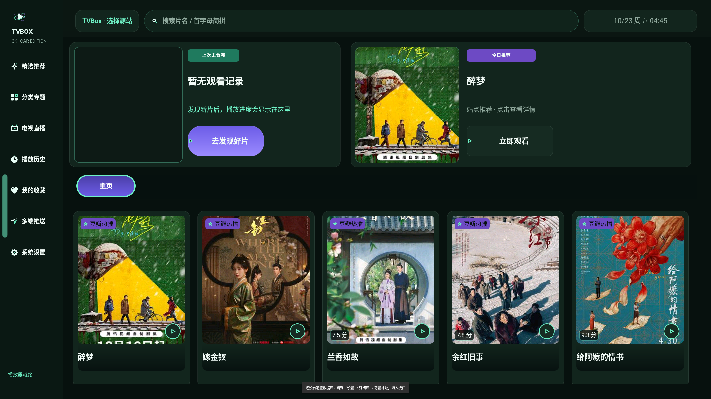
零配置：点击热播卡出现明确配置指引
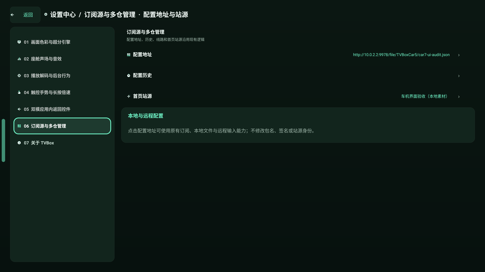
设置页标题随分区变化，配置地址显示当前值
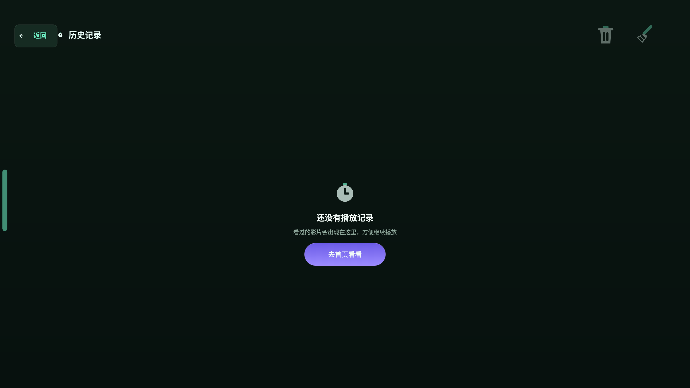
历史记录空态：说明 + 可执行入口
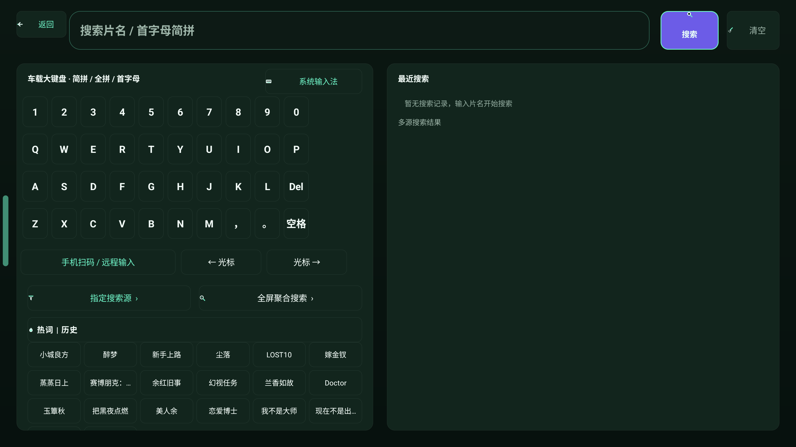
最近搜索为空时的提示
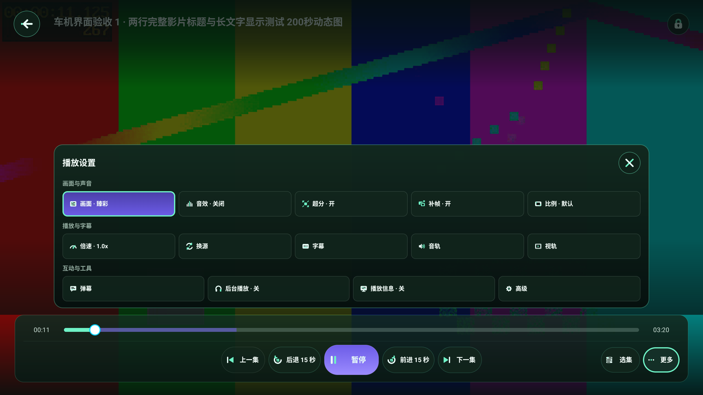
播放器 More：宽卡图标与文字同侧成组
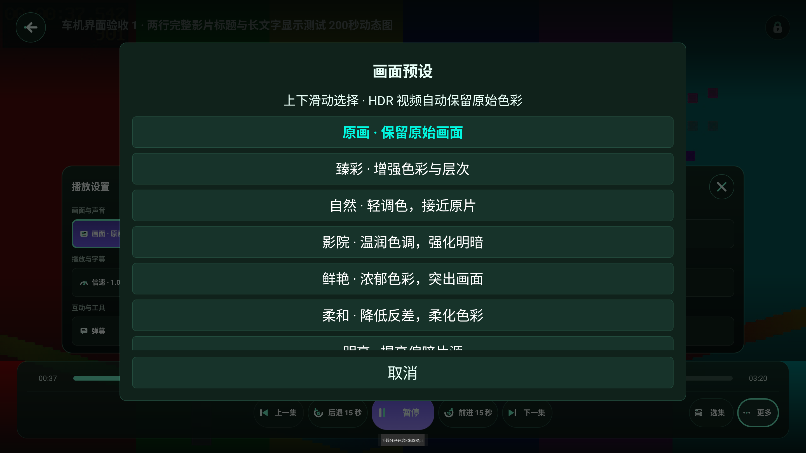
画面预设：提示上移，取消按钮不再被遮挡
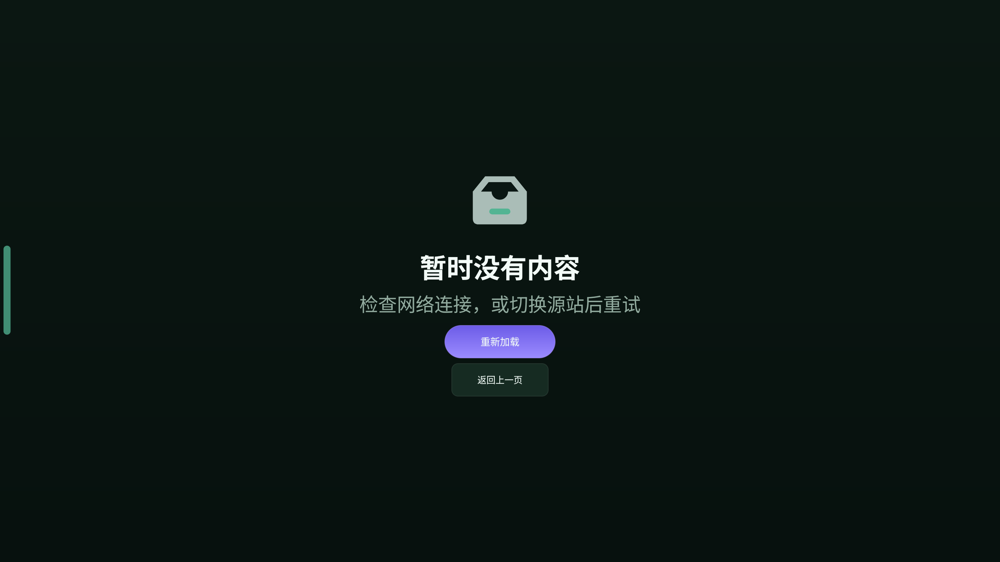
详情兜底失败：重新加载 + 返回上一页
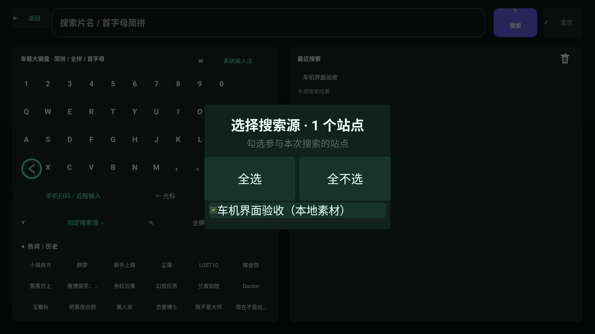
搜索源弹窗：标题、数量与可勾选站点
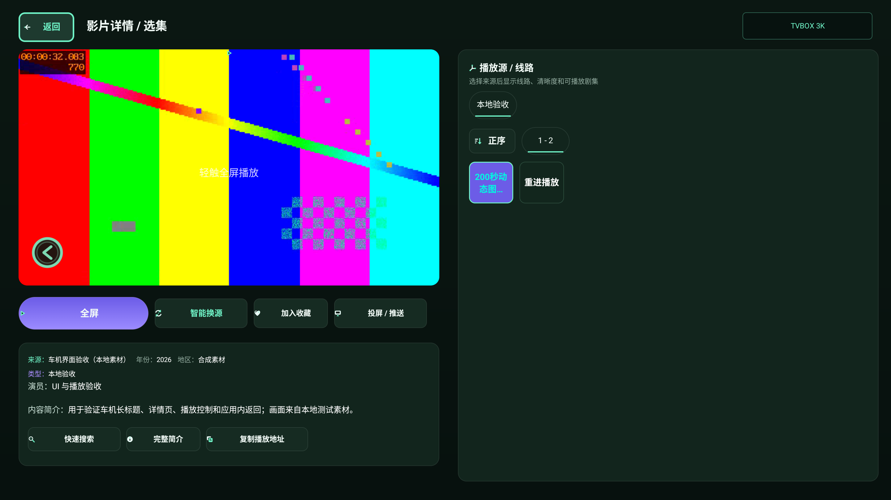
详情：紫色唯一主操作 + 次级操作
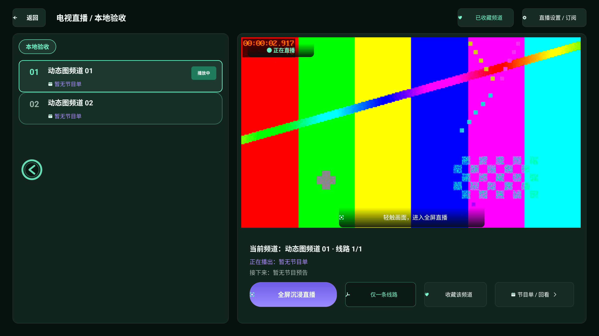
直播：主操作明确，EPG 区留出安全边距
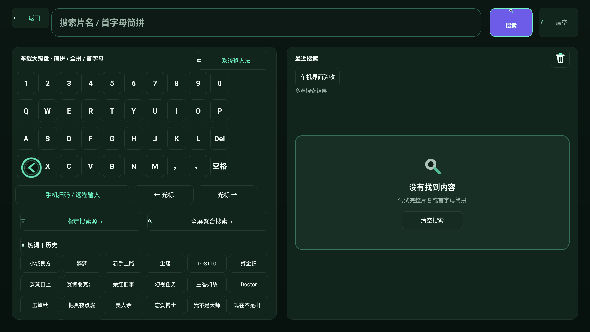
统一空状态壳
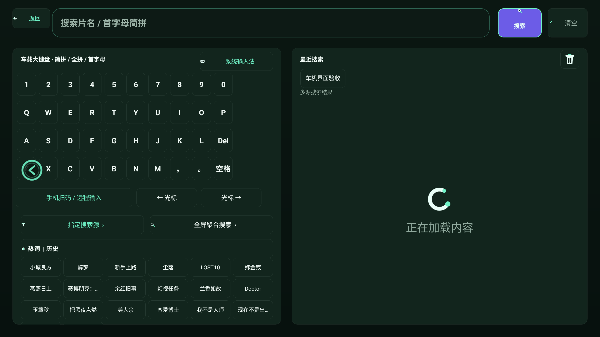
统一加载状态壳
回归
| 套件 | 结果 | 覆盖 |
|---|---|---|
| pages | 80 / 0 | 首页、分类、搜索、详情、直播、设置、历史、收藏、本地、推送、返回链 |
| ux3k | 98 / 0 | 3K 页面、设置分区、播放器各状态、直播全屏 |
| playback | 101 / 0 | EXO/IJK、全屏、返回、后台恢复、字幕/音轨/换源 |
| gestures | 7 / 0 | 边缘返回、悬浮球、拖动与触发 |
| states | 5 / 0 | 空 / 加载 / 错误 / 离线 |
pages 有一个已知返回时序抖动：同一 SHA 首次 79/1（detail Back finishes one page），重跑 80/0；最终证据采用通过批次并保留说明。playback 首次因验收视频未放回 /sdcard/TVBoxCar5 失败，补齐后 101/0。
30 条逐项结果
| ID | 判定 | 当前分支依据 |
|---|---|---|
| M-01 | 已修 | 空源 Toast；manual/nosource-toast.png |
| M-02 | 已防御 | ADJUST_PAN；车机无软键盘主路径 |
| M-03 | 环境 | 仅“存储权限”按钮请求；确认不申请 |
| M-04 | 已具备 | 统一 loading 壳带文案 |
| M-05 | 已具备 | ScrollView match_parent + 160px 底部内边距 |
| M-06 | 不适用 | 左导航 + 单列连续行 |
| M-07 | 已具备 | tvApi 绑定 API_URL |
| M-08 | 不适用 | 无该自绘弹窗；行文本 28px |
| M-09 | 已修 | 全局 dim 0.62 |
| M-10 | 已具备 | SelectDialog maxHeight 410 + 滚动 |
| M-11 | 已修 | 正确搜索源列表 + “选择搜索源 · N 个站点”标题 |
| M-12 | 不适用 | 固定 TVBOX 3K 品牌位 |
| M-13 | 不适用 | 左导航 + 双 hero |
| M-14 | 不同实现 | 25px peek，不是 149px 半卡 |
| M-15 | 已具备 | 标题独立深色 scrim |
| M-16 | 已具备 | ImgUtil 占位图标缓存，无 drawText |
| M-17 | 不适用 | 海报行铺到底部 |
| M-18 | 已修 | 历史空态 + 主按钮；manual/history-empty.png |
| M-19 | 已修 | 搜索历史空提示；manual/search-empty.png |
| M-20 | 不适用 | 右栏结果列表，无计数胶囊 |
| M-21 | 已具备 | 紫色唯一主操作 + 次级按钮 |
| M-22 | 不适用 | 1360px 左内容 + 1360px 右选集 |
| M-23 | 已具备 | 复制播放地址按钮，不露 URL |
| M-24 | 已修 | 统一空态 + “重新加载”“返回上一页”双入口 |
| M-25 | 已修 | JsLoader 按 siteKey 分段加锁 |
| M-26 | 已具备 | 播放器重构；playback 101/0 |
| M-27 | 环境 | 外部 x86_64 自编包；arm 包有 .so，且已有 try/catch 降级 |
| M-28 | 已具备 | 直播空态 + 设置入口；EPG 内边距 |
| M-29 | 已具备 | Bounds 夹取 + 边缘引导薄荷色；gestures 7/0 |
| M-30 | 不适用 | 按钮/行/导航共用 car_radius_* |
证据
car/qa/ux-audit-car7-current/evidence-f93416d7/：28 张页面截图 + 7 张专项截图 + 5 份测试 JSON + identity。car/reports/ux_redesign/CAR-17.3-3K-EXTERNAL-AUDIT-VERIFICATION.md：逐条文字版。- 背景彩条/灰度块为本地验收视频，不是产品 UI；state-* 为实际 Android 状态组件截图，不是网络事件录像。